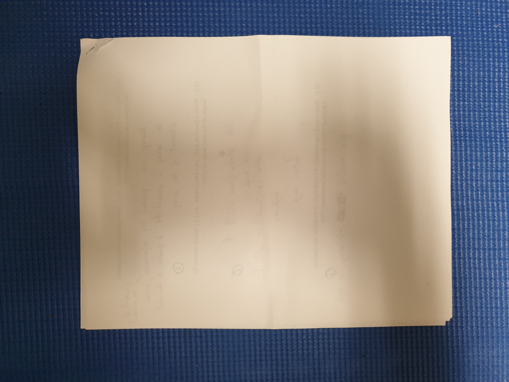
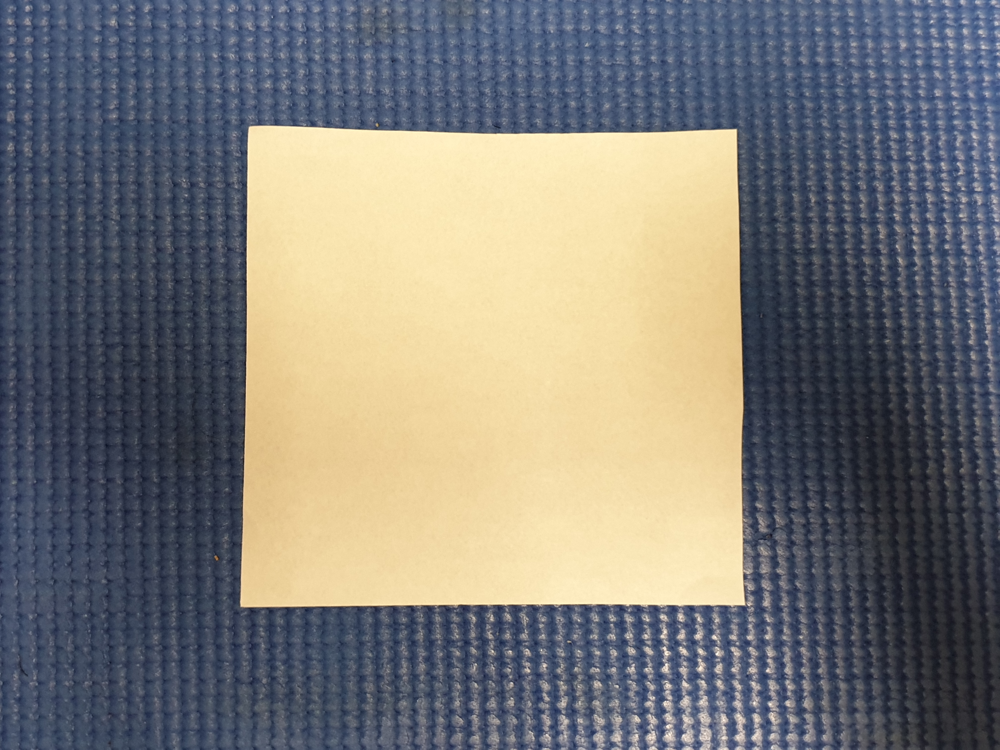
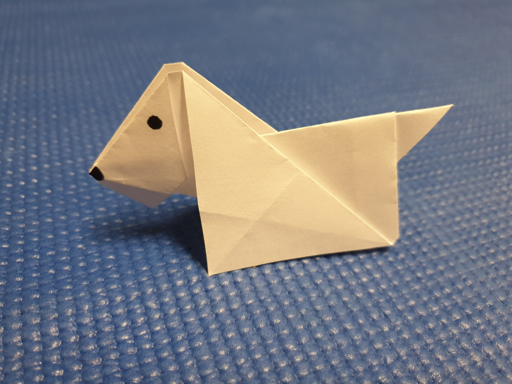

How to make an origami dog
*spoiler* Click here to see the end result *spoiler*

*spoiler* Click here to see the end result *spoiler*
Take a sheet of paper
Cut it to get a square
Follow this tutorial to fold it properly
Draw the eyes and nose
Take a new sheet and do another one!